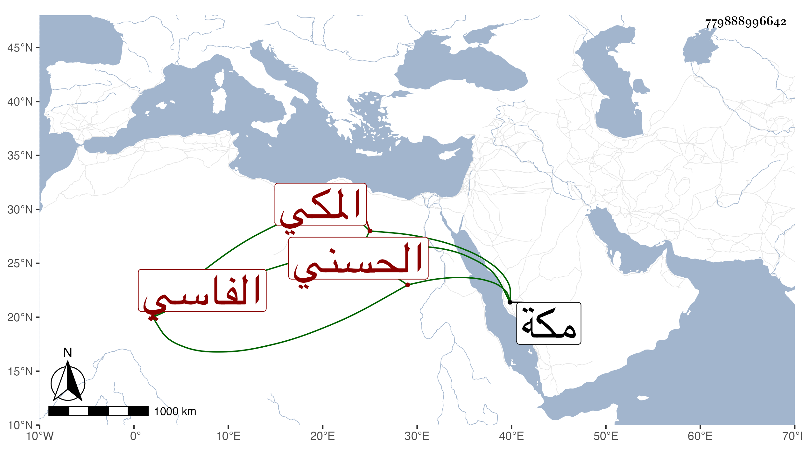

0902Sakhawi.DawLamic.ITO20230111-ara1.EIS1600.779888996642
Biography ID: 779888996642
916
أم عرفة ابن القاضي عبد القادر بن أبي الفتح محمد بن أحمد بن أبي عبد الله الحسني الفاسي المكي ، أجاز لها في سنة أربع وعشرين فما بعدها جماعة ، وتزوجها ابن عمها موسى بن محمد بن أبي الفتح وأولدها . وماتت في جمادى الثانية سنة تسع وسبعين بمكة .
